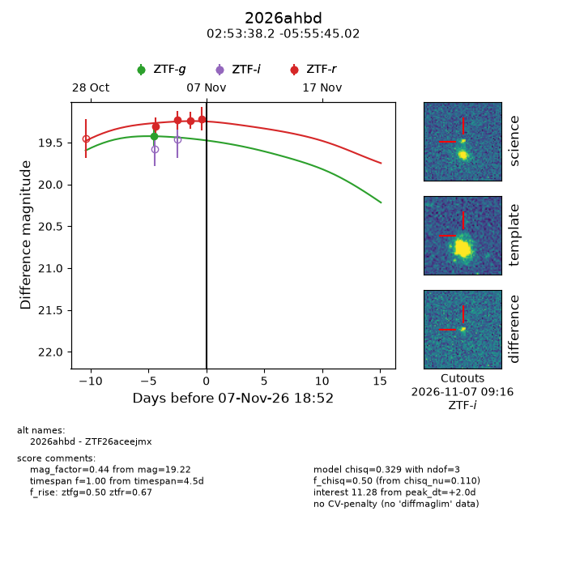
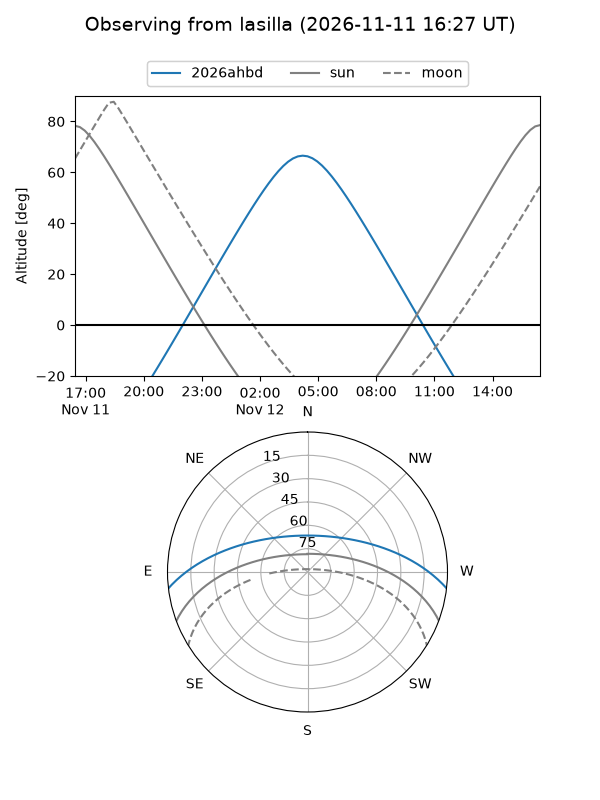
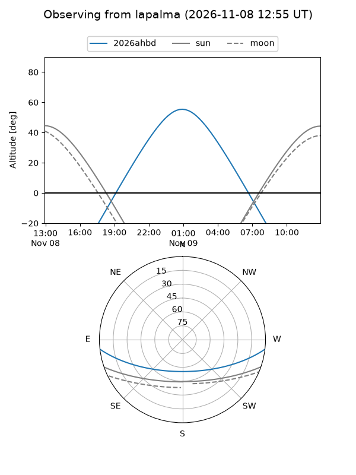
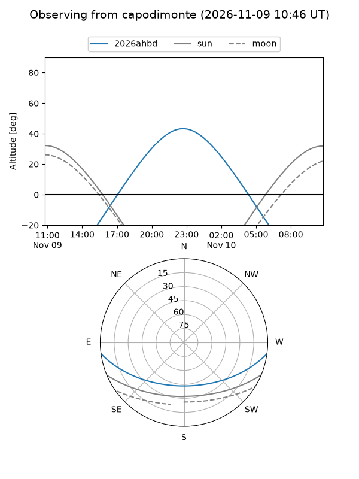
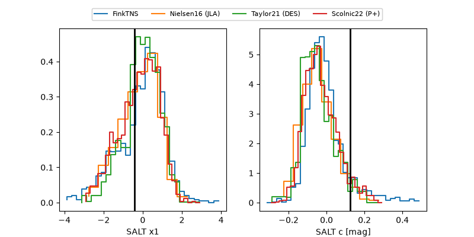

2026ahbd
Target 2026ahbd at 2026-11-07 18:54
Aliases and brokers:
FINK-ZTF: ztf.fink-portal.org/ZTF26aceejmx
Lasair-ZTF: lasair-ztf.lsst.ac.uk/objects/ZTF26aceejmx
ALeRCE-ZTF: alerce.online/object/ZTF26aceejmx
YSE-PZ: ziggy.ucolick.org/yse/transient_detail/2026ahbd
TNS name: wis-tns.org/object/2026ahbd
Direct TNS query: direct search
alt names
ZTF26aceejmx (ztf,fink_ztf)
2026ahbd (tns,yse)
Coordinates:
equatorial (ra, dec) = 43.4090,-5.92917
equatorial (HMS+DMS) = 02:53:38.17,-05:55:45.02
galactic (l, b) = (182.3602,-54.04233)
Flags:
peak dt: +2.0
Photometry:
last ztfg=19.42, ztfr=19.22
1 ztfg, 4 ztfr detections
Lightcurve

Visibility



Additional plots
